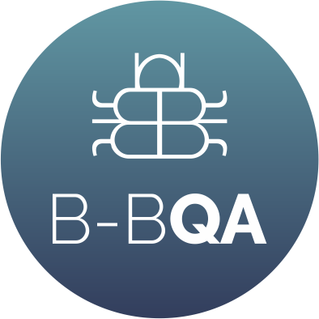
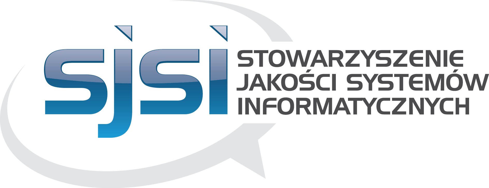
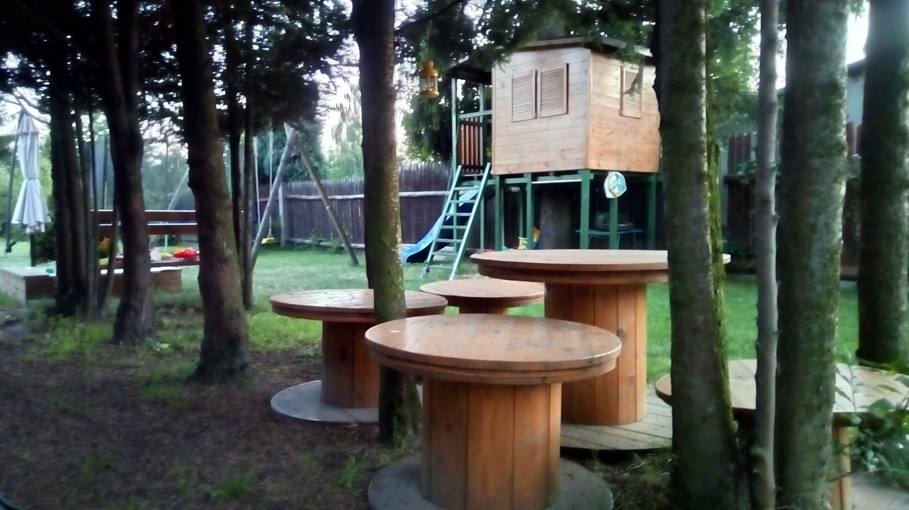
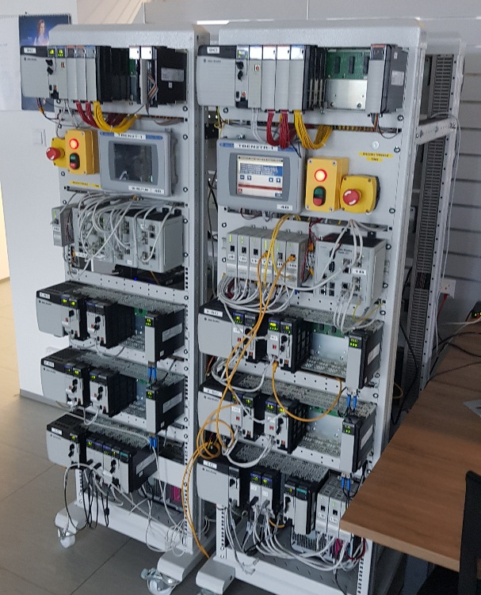
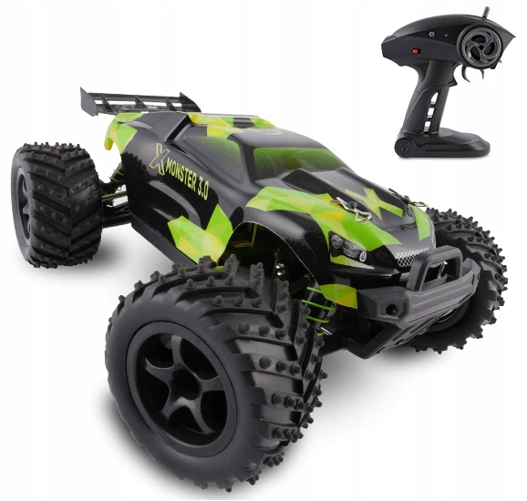

Wstęp do
automatyzacji w
Python'ie


by Maciej 'maQ' Kusz
-
Agenda:
- Kim jest prowadzący?
- Co to automatyzacja?
- Jak się uczyć?
- Co będzie potrzebne?
- Proste przykłady testów
- Co dalej?
- Ograniczenia (?) Python'a
- Jak to przetestować?
- ?

-
Prywatnie:
- mąż i ojciec
- wiek: 37 lat
- mówca: PyCon '16, PySilesia '16 i '17, Up#19, ŚlonzaczQA#2
- hobby: IoT i DIY
 - przyszłość: blog, podcast, ???
-
Zawodowo:
- tester od 11 lat
- tester automatyczny od 6 lat (Python)
- 4 frameworki do testów na koncie
- początki: Junior Quality Assuarance
- aktualnie: Senior Python Developer
-
Automatyzacja:
Znaczne ograniczenie lub zastąpienie ludzkiej pracy fizycznej i umysłowej przez pracę maszyn działających na zasadzie samoregulacji i wykonujących określone czynności bez udziału człowieka (czyli samoczynnych).
-
Zrobotyzowana Automatyzacja Procesów
ang. Robotic Process Automation (RPA)
Technologia automatyzacji powtarzalnych procesów biznesowych, z wykorzystaniem programów komputerowych – robotów symulujących pracę człowieka. [...] Roboty RPA są programowane do samodzielnego wykonywania działań, o różnym stopniu skomplikowania, które cechuje powtarzalność i ograniczona liczba wyjątków w regule algorytmu.
-
Jak się uczyć?
- książki
- własny projekt
- kurs online
- stackoverflow.com
- google.com
-
Co będzie potrzebne?
- Python
- IDE
- Framework
- Biblioteki
- Dodatki
-
Python:
- instalacja
- virtualenv (venv)
- pip
-
IDE:
- notatnik + terminal
- Eclipse
- VSCode
- PyCharm
ang. Integrated Development Environment
-
Framework:
- UnitTest
- PyTest
- Behave
- Locust.io
-
Biblioteki:
- standardowe (np. html, time, datetime, random, urllib)
- selenium
- requests
- mysql-connector, psycopg2, redis, kafka-python, itp.
- faker
-
Dodatki:
- sphinx
- invoke
- allure
- jenkins
- opencv
Proste przykłady testów
czyli jak bym zaczął się uczyć Selenium
-
Co dalej?
- Obiektowość w Pythonie
- Type Hinting
- Dekoratory
- Page Object Pattern
- Borg
- Multiprocessing
- Ograniczenia (?) Python'a
i jak sobie z nimi poradzić - szybkość
- brak typowania
- GIL (Global Interpreter Lock)
- ???

Jak to przetestować?

?
Thx